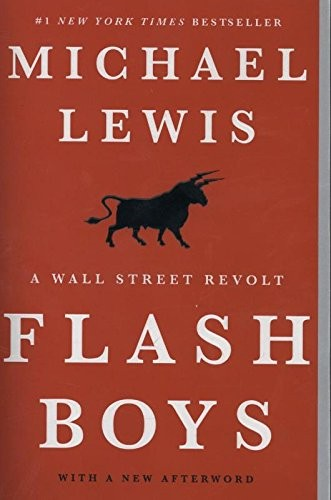

迈克尔·刘易斯（Michael Lewis）是当代最具影响力的财经非虚构作家之一，代表作涵盖《说谎者的扑克牌》、《大空头》、《点球成金》等多部改变了公众对金融行业认知的标志性作品。《快闪大对决》出版于2014年3月，由W·W·诺顿出版社发行，上市首周即登上《纽约时报》畅销书排行榜第一位，并入围2014年《金融时报》年度商业书籍。本书同样延续了刘易斯一贯的写作策略：以一组普通人对抗体制的故事为线索，将复杂的金融技术现象转化为引人入胜的人物叙事，从而让外行读者也能理解高频交易（High-Frequency Trading）这一隐秘的华尔街生态。
本书的核心调查对象是高频交易——一种利用超高速计算机和优化的网络线路，在其他投资者的交易指令到达交易所之前，以毫秒甚至微秒的时间优势抢先完成交易并从中套利的策略。刘易斯以加拿大皇家银行交易员布拉德·卡特赛乌亚马（Brad Katsuyama）为主角，追踪了他从发现市场异常、组建调查团队、拆解高频交易机制，到最终创立旨在消除信息不对称的新交易所IEX的完整历程。书中揭示，当大型机构投资者的订单在纽约的十三个交易所之间流转时，高频交易商通过共置（co-location）服务器、购买交易所特殊数据接口等合法但不透明的手段，系统性地占据信息先机，使普通机构投资者——乃至其背后的养老基金和普通储蓄者——在每一笔交易中都蒙受微小但持续的损耗。
本书出版后在华尔街引发强烈震动。美国司法部、FBI以及多个金融监管机构相继宣布对高频交易展开调查；SEC对多家交易所和高频交易公司启动审查；IEX最终获批成为正式交易所。这些现实世界的回响，使《快闪大对决》成为近年来对实际政策产生最直接影响的财经非虚构著作之一。围绕本书内容，刘易斯与多位高频交易业内人士及学者展开了激烈的公开辩论，这场辩论本身也成为理解高频交易争议的重要文本。
对于关注金融市场结构与监管问题的读者而言，《快闪大对决》提供的远不止是一则行业内幕——它是一次关于技术进步如何在透明度缺失的条件下制造新型利益不对称的系统性追问。刘易斯的叙事天赋在于，他能将枯燥的市场微观结构问题（market microstructure）转化为道德层面的清晰命题：当市场的运转方式系统性地有利于速度最快的人而非信息最好的人，这种公平性的侵蚀究竟意味着什么？这是一个对任何长期投资者都切身相关的问题。